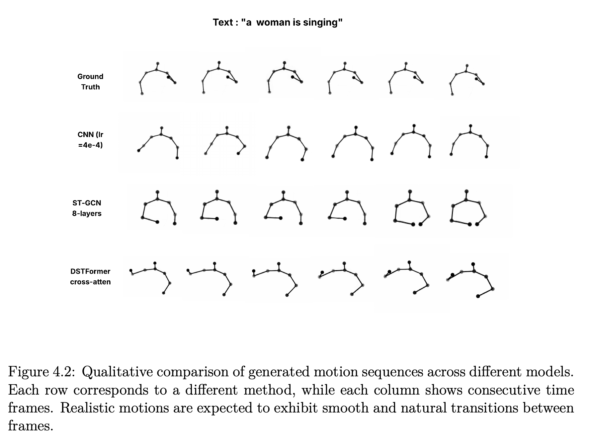
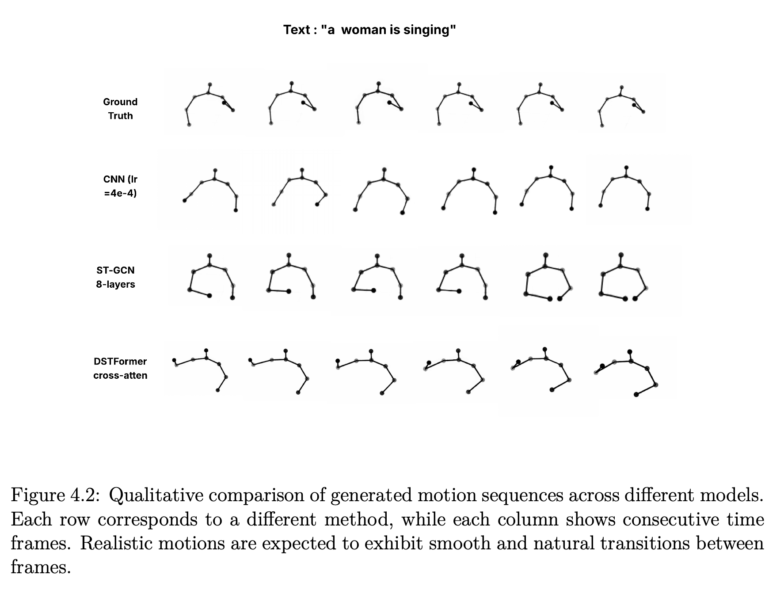

Generative Adversarial Network for Human Action Generation
Undergraduate Thesis
Abstract
Text-to-action generation leverages natural language processing to interpret instructions and map them to relevant motion sequences. Interest in this topic has surged, yet producing natural, coherent motion from free-form descriptions remains difficult. This project addresses the challenge with a hybrid GAN architecture that combines Spatial-Temporal Graph Convolutional Networks (ST-GCNs) and dynamic spatial-temporal Transformers (DST-Transformer). The model pursues realistic motion that stays aligned with the prompt. We review the broader context and prior work, underscoring issues such as preserving motion dynamics and maintaining semantic fidelity. The system integrates a multi-layer ST-GCN generator and discriminator with Transformer modules for global reasoning, along with a multi-scale sampling strategy across joints and time. We describe implementation details and training workflow—including dataset preparation and hyperparameter choices—and evaluate several models on the CoSpeech dataset. The experiments highlight strengths, expose limitations, and suggest directions for future improvements.
Approach


Results
| Model | FGD (feat) ↓ | FGD (raw) ↓ | APE ↓ | AA → | AJ → |
|---|---|---|---|---|---|
| ST-GCN 1 | 37.670 | 37.428 | 0.5556 | 131.96±75.58 | 66.38±37.98 |
| ST-GCN 2 | 26.959 | 28.827 | 0.5541 | 106.70±81.81 | 52.47±40.25 |
| ST-GCN 3 | 109.466 | 88.300 | 0.5137 | 80.93±4.61 | 43.96±2.67 |
| Real Data (ref.) | 0.0 | 0.0 | 0.0 | 74.46±54.87 | 33.98±25.33 |
| Model | FGD (feat) ↓ | FGD (raw) ↓ | APE ↓ | AA → | AJ → |
|---|---|---|---|---|---|
| CNN 1 | 17.61 | 28.25 | 0.2149 | 232.68±34.83 | 121.95±19.22 |
| CNN 2 | 24.89 | 35.51 | 0.2059 | 212.52±22.26 | 114.82±12.29 |
| Real Data (ref.) | 0.0 | 0.0 | 0.0 | 74.46±54.87 | 33.98±25.33 |
| Model | FGD (feat) ↓ | FGD (raw) ↓ | APE ↓ | AA → | AJ → |
|---|---|---|---|---|---|
| DSTFormer 1 | 20.972 | 27.595 | 0.5019 | 176.09±82.87 | 84.64±30.00 |
| DSTFormer 2 | 25.211 | 28.090 | 0.5045 | 89.02±46.16 | 45.27±23.39 |
| DSTFormer 3 | 46.932 | 51.382 | 0.4804 | 78.79±18.95 | 38.19±9.56 |
| DSTFormer 4 | 37.229 | 49.899 | 0.4880 | 80.83±30.50 | 40.33±15.90 |
| Real Data (ref.) | 0.0 | 0.0 | 0.0 | 74.46±54.87 | 33.98±25.33 |
| Model | FGD (feat) ↓ | FGD (raw) ↓ | APE ↓ | AA → | AJ → |
|---|---|---|---|---|---|
| CNN 2 | 24.89 | 35.51 | 0.2059 | 212.52±22.26 | 114.82±12.29 |
| ST-GCN 3 | 109.466 | 88.300 | 0.5137 | 80.93±4.61 | 43.96±2.67 |
| DSTFormer 3 | 46.932 | 51.382 | 0.4804 | 78.79±18.95 | 38.19±9.56 |
| Real Data (ref.) | 0.0 | 0.0 | 0.0 | 74.46±54.87 | 33.98±25.33 |
Arrows indicate optimization direction: ↓ lower is better, → closer to real data is better.
Why the “best” CNN score is misleading
APE and FGD emphasize positional and distribution errors, but they barely react to kinematic cues such as velocity and acceleration. Even though the CNN drives APE/FGD very low, its motions drift far from the physics of real sequences. We introduce the Reality Gap—the z-score distance of AA/AJ from the real-data statistics—to capture that mismatch.
Reality Gap = |AA − AAreal| / σAA + |AJ − AJreal| / σAJ (lower is better).
Reality Gap (lower is better)
APE (lower is better)
FGD (feat) (lower is better)
Key Numbers
Reference (ground truth): AA = 74.46 ± 54.87, AJ = 33.98 ± 25.33.
 

The CNN sequences exhibit noticeable pose discontinuities and unrealistic joint velocities (see panels), whereas DSTFormer maintains the tempo and amplitude of real motion. The visuals reiterate that “better metrics ≠ usable motion”, leaving the CNN architecture unsuitable for practical deployment.